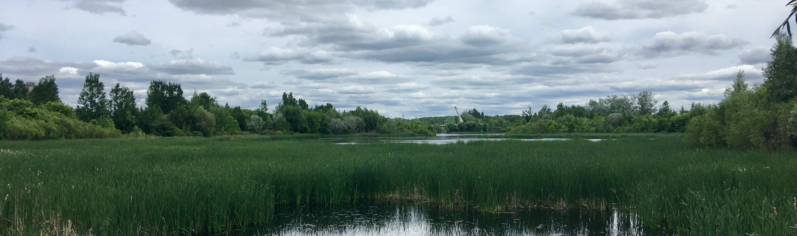

Methodology

Project Planning Phase
What we did:
We began by forming our problem statement, which can be seen above. First, we defined our ideal outcome of this project from a user's
perspective. Next, we stated the current reality that exists for its potential users and the consequences should this continue to be the
reality. Finally, we drafted a proposal briefly outlining our tentative solution to the problem, and the technology we would use to achieve it.
What we learned:
The first draft of our problem statement ended up being too all-encompassing for the scope of this project. We amended this by choosing
to focus only on Geocortex 5 Web and ArcGIS Online. Our problem statement also focused too much on how it would benefit us, so we
redirected the wording to really hone in on how the user would benefit from the creation of our project.
Results:
We had a specific and actionable problem statement to guide us for the rest of the project. We could return to it if we needed to
remind ourselves of the scope and intent of what we were trying to do.
Discovery and Experimentation Phase
What we did:
We spent this phase individually familiarizing ourselves with Geocortex 5 Web. We would share what we discovered with each other during
our meetings. After some time experimenting with Geocortex on our own, we came together to explore some functions more related to our project.
What we learned:
The first thing we learned about Geocortex 5 Web is that it can actually be accessed from inside ArcGIS Online. This was a bit different from
what we learned with Geocortex Essentials in class. We also encountered an unfortunate bug present in the version of Geocortex 5 Web provided
by the school: when trying to edit a new Map component, a Loading Error occurs. As such, this means only one map component can be added
to a layout. In addition, when adding a new layout, you MUST select "Copy current layout" because a blank layout will not be able to have
a new functioning Map component added to it. The only workaround for this problem right now is to edit the Map component that is already present.
Results:
We developed a greater understanding of the functionality of Geocortex 5 Web, how it is used along with ArcGIS Online, and some of the
issues we may encounter while creating our final product.
Data Preparation Phase
What we did:
A dataset containing the polygon boundaries of the upper-tier, lower-tier, and single-tier municipalities of Ontario was brought into
ArcGIS Pro and joined with an Excel file containing the URLs of the official websites of the municipalities. This data was then uploaded
to ArcGIS Online, where it was accessible to be referenced in a Geocortex 5 Web app.
Results:
We were then ready to proceed to create our final product.
Development Phase
What we did:
We started by switching out the default 2D map for our map by linking it from ArcGIS Online. We also removed the default 3D map. Next,
we customized many of the map components such as the Home tab, the Toolbar, and the Map surround elements. We also customized which fields
are viewable to the map user, the only necessary two being the name of the municipality, and the URL to its website. Finally, the app was
published by saving it, and then selecting "Deploy", and "Push to Production".
What we learned:
What we noted very quickly is that all edits to the actual map must be performed in ArcGIS Online, such as the symbolization of the
layers, the viewable fields, and the default active layers. This was unexpected for us, as we initially had the impression that most of
our work would be completed in Geocortex. We also discovered that Geocortex does not automatically save your work, it must be manually
saved before you leave the page. we also encountered difficulty with using a custom image on the app. Images must be sized exactly to
the dimensions of the app, or else they will not display properly, and they must be hosted on a publicly viewable site. Uploading our
images to the Geocortex editor directly did not appear to work. Lastly, when publishing our application, we discovered that you can easily
un-publish your app by setting the Sharing Permissions to "Not Shared" in the Deploy menu and selecting the Production menu.
Results:
A successfully created beta version of our app, ready to be reviewed with Shawn.
Review Phase
What we did:
We provided Shawn with a link to our Geocortex 5 Web application, which he explored and provided us with feedback. We were able to view
this process as a viewer of Shawn's screen.
Results:
It was helpful to watch someone else interact with our product as a potential end user. It provided us with much insight to finalize
our design. We took Shawn's suggestions and made appropriate slight changes to the final product. You can see our solution in action below!
Future suggestions:
To improve our product in the future, it would be helpful to also include the URLs to the upper-tier municipalities. Due to time constraints,
this was not possible for us because we could not find a CSV or Excel document containing that information. It would also be helpful to develop
a filter or similar system in Geocortex that would only show municipalities that have a website, as some do not, and their Website field is left blank as a result.